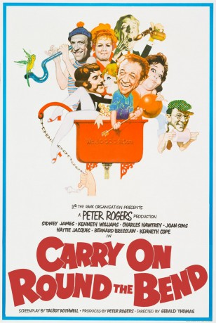
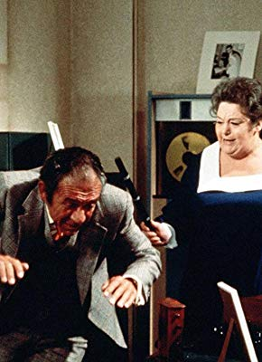
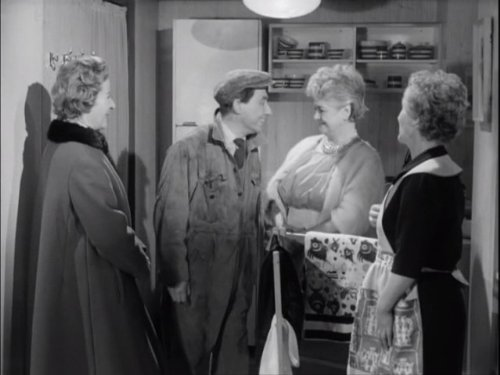
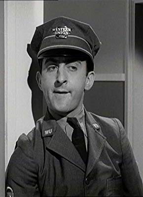

#11795 Carry On 22 - Ist ja irre - Ein Streik kommt selten allein
Alternativ: Carry On At your Convenience
 
 IMDB-Wertung: 6.2 / 10
IMDB-Wertung: 6.2 / 10  Metascore: 0
Metascore: 0 
This is the tale of industrial strife at WC Boggs' Lavatory factory. Vic Spanner is the union representative who calls a strike at the drop of a hat; eventually everyone has to get fed up with him. This is also the ideal opportunity for lots of lavatorial jokes...
Jahr: 1971
Dauer: 85 Minuten
FSK:
Land: England Studio: Carol Media HomeTonspuren:
Untertitel:
Auflösung: SD (576x432) Größe: 698 MB
Genre: Komödie
Regisseur: Gerald Thomas
Drehbuch: Talbot Rothwell
Soundtrack: Eric Rogers
Darsteller:
 Sidney James als Sid Plummer
Sidney James als Sid Plummer Kenneth Williams als W. C. Boggs
Kenneth Williams als W. C. Boggs Charles Hawtrey als Charles Coote
Charles Hawtrey als Charles Coote Joan Sims als Chloë Moore
Joan Sims als Chloë Moore-  Hattie Jacques als Beattie Plummer
 Bernard Bresslaw als Bernie Hulke
Bernard Bresslaw als Bernie Hulke Kenneth Cope als Vic Spanner
Kenneth Cope als Vic Spanner Patsy Rowlands als Hortence Withering
Patsy Rowlands als Hortence Withering- Jacki Piper als Myrtle Plummer
- Richard O'Callaghan als Lewis Boggs
- Bill Maynard als Fred Moore
-  Renee Houston als Agatha Spanner
 Marianne Stone als Maud
Marianne Stone als Maud- Margaret Nolan als Popsy
- Geoffrey Hughes als Willie
-  Hugh Futcher als Ernie
 Leon Greene als Chef
Leon Greene als Chef- Harry Towb als Doctor in Film
- Peter Burton als Hotel Manager
- Larry Martyn als Rifle Range Owner
- Shirley Stelfox als Bunny Waitress
- Bill Pertwee als Manager of Whippit Inn (scenes deleted)
 Terry Scott als Mr. Allcock (scenes deleted)
Terry Scott als Mr. Allcock (scenes deleted) Philip Stone als Mr. Bulstrode (scenes deleted)
Philip Stone als Mr. Bulstrode (scenes deleted)- Anouska Hempel als New Canteen Girl (uncredited)
 Julian Holloway als Roger (uncredited)
Julian Holloway als Roger (uncredited) Fred Wood als Strike-Breaker (uncredited)
Fred Wood als Strike-Breaker (uncredited)- Davy Kaye als Benny
- Simon Cain als Barman
- Alec Bregonzi als Photographer (scenes deleted)
- Peter Avella als Factory Worker (uncredited)
- Amelia Bayntun als Mrs. Spragg (uncredited)
- Jack 'Kid' Berg als Factory Worker (uncredited)
- Maurice Dunster als Factory Worker (uncredited)
- Duncan Flanning als Middle-Class Gentleman (uncredited)
- Jill Goldston als Factory Worker (uncredited)
- Tina Hart als Usherette / Dancer (uncredited)
- Walter Henry als Man in Cinema (uncredited)
- Bill Hibbert als Factory Worker (uncredited)
- George Hilsdon als Factory Worker (uncredited)
- Cyril Kent als Factory Worker (uncredited)
- Jim O'Brady als Factory Worker (uncredited)
- Roland Oliver als Factory Worker (uncredited)
- Phil Parkes als Factory Worker (uncredited)
- Bob Ramsey als Factory Worker (uncredited)
- Jack Ross als Cinema Cashier (uncredited)
- Jack Sharp als Factory Worker (uncredited)
Datei: X:\7+mehr(A-Z)\Carry On\Carry On 22 - Ist ja irre - Ein Streik kommt selten allein (1971, FSK, 576x432).avi seit 20.09.2019
Festplatte: HD Collection-7+mehr(A-Z)+Person
 Es gibt insgesamt 33 Filme in der Gruppe '7+mehr(A-Z)\Carry On'
Es gibt insgesamt 33 Filme in der Gruppe '7+mehr(A-Z)\Carry On'